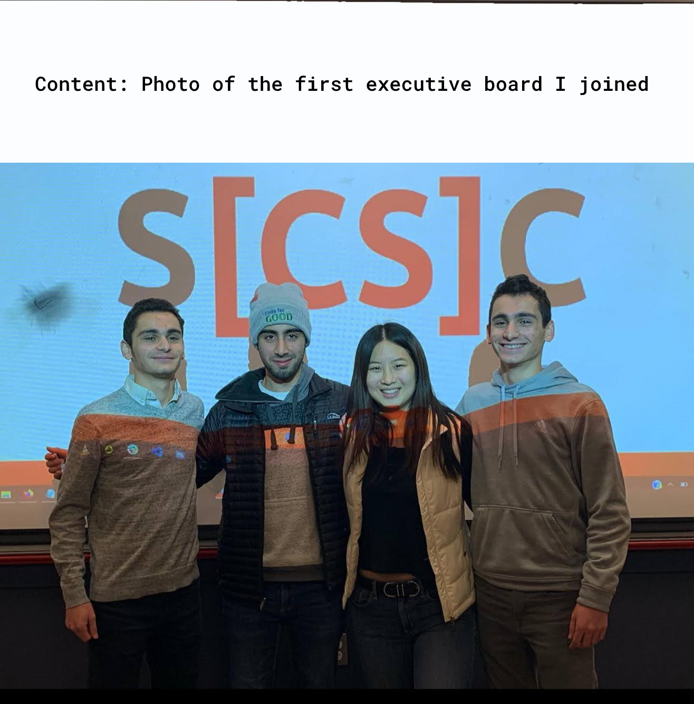
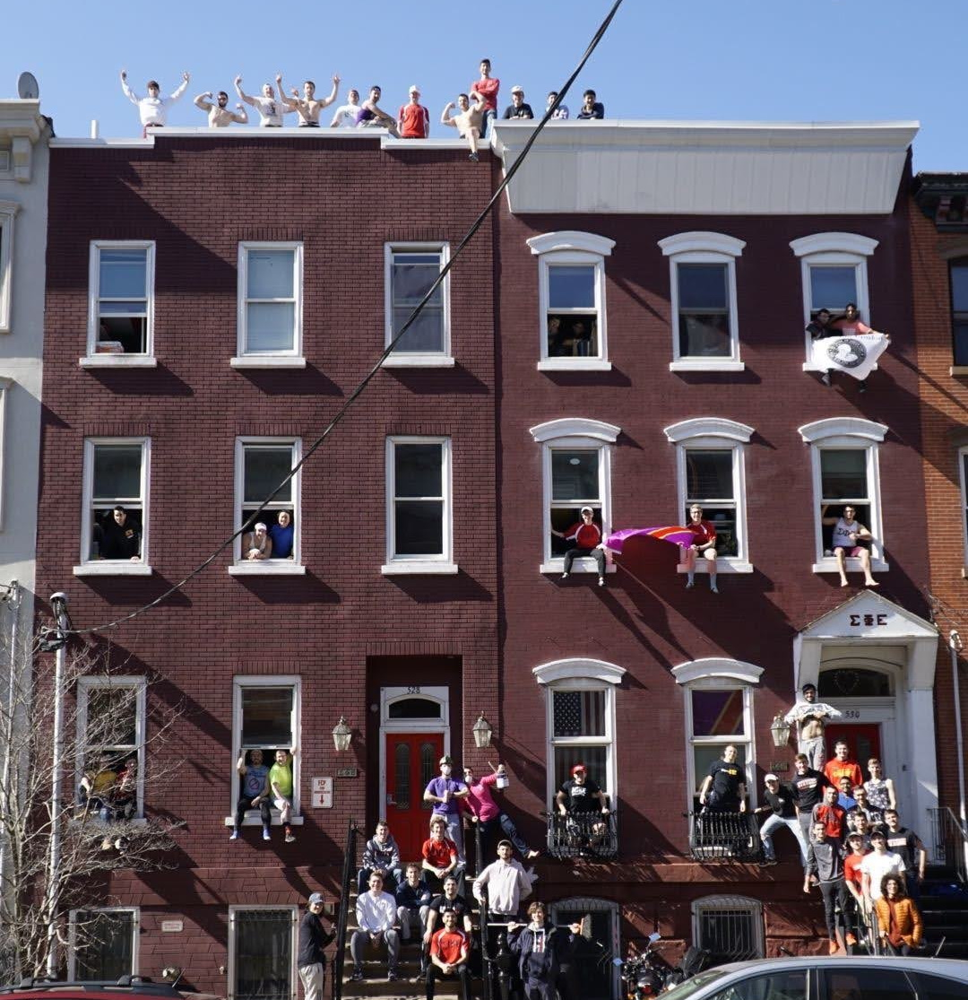
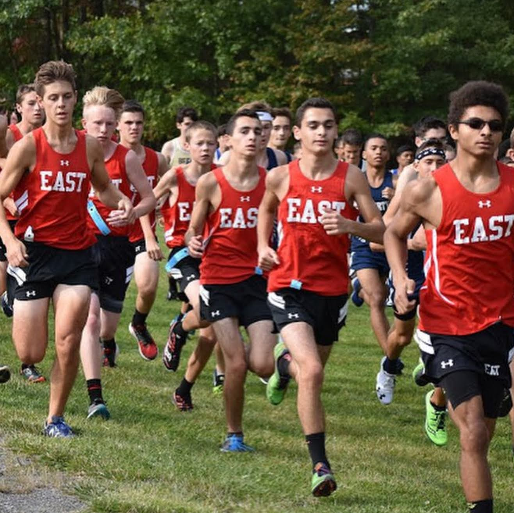

Hello!
My name is Marco Polimeni, and I’m a Junior Computer Science student at Stevens Institute of Technology in the Greater New York City area.
Wondering if I’d be a good hire? Check out my resume.
At Stevens, I serve as President of the Stevens Computer Science Club. Additionally, I’m hired as a Course Assistant for our Undergraduate Algorithms course — CS-385.
Other organizations I'm affiliated with is our chapter of Sigma Phi Epsilon and the Peer Leader program where I help new students transition to Stevens.
Over this upcoming Summer, I will intern at BlackRock as a Summer Analyst on their Aladdin team.
During high school, I participated in many academic extracurriculars and co-started a Computer Science Club. In addition to these extracurriculars, I was one of our top long distance runners for Cross Country and Track.